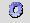

Uue sõnastiku loomine
Uue sõnastiku loomiseks klõpsa
EELexi töötoas paremal servas lingil
Uus sõnastik. Ilmuvas aknas tuleb valida sobiv viis jätkamiseks. Skeemi valimisel saad uuele sõnastikule aluseks standardskeemi, mida saab hiljem muuta skeemieditori abil (vt
Skeemi genereerimine).
- Minimaalne skeem - Kasuta juhul, kui soovid kogu uue sõnastiku skeemi luua EELexi skeemieditoriga.
- Kakskeelse sõnastiku põhiskeem - Kasuta siis, kui soovid luua tõlkesõnastikku, mis sisaldab piisavalt andmeid nii lähtekeele kui tulemkeele kohta.
- Kakskeelse sõnastiku väike skeem - Kasuta juhul, kui soovid luua lihtsa struktuuriga tõlkesõnastikku.
- Eesti-x sõnastikupõhi - Kasuta siis, kui soovid uue kakskeelse sõnastiku aluseks võtta eesti-x sõnastiku skeemi koos andmebaasiga, mis sisaldab sõnastiku eesti poolt.
- Diakroonilise sõnastiku skeem - Kasuta siis, kui soovid teha diakroonilist sõnastikku (eesti laenude sõnastiku eeskujul).
- Terminibaasi alus - Kasuta juhul, kui soovid teha terminibaasi või oskussõnastikku.
- Registreeri sõnastik - Kasuta juhul, kui lisad uue sõnastiku FTP-d kasutades (vt Sõnastiku loomine FTP-d kasutades,aga see on vananenud moodus, eelista skeemi valimist).
Võimalik on teha ka
osasõnastikku (alamsõnastikku), selle kohta vt allpool.
Vali sobiv rida ja klõpsa
Tegema. Sõltuvalt valitud sõnastiku loomise viisist süsteemi edasine käitumine varieerub. Alati küsitakse uue sõnastiku jaoks infot:
sõnastiku id (kood). Id peab olema kolmekohaline (kasuta väiketähti ja numbreid) ja algama väiketähega. Lisaks id-väljale on kohustuslik anda sõnastikule
eestikeelne nimi. Nupp
Kontrolli vaatab, kas soovitud id on vaba ja muud nõutud väljad täidetud. Kui kontroll läbitud, vajuta
submit ja sõnastik luuakse.
Kuvatud logi lõppu ilmuvad lingid, mille abil edasi tegutseda:
Sõnastiku avalehel - viib sõnastiku avalehele, kust saab edasi minna Testversiooni. (Tööversiooni loomist vt
Testversioon ja tööversioon.)
Sõnastike haldusesse - viib EELexi Sõnastike halduse nimekirja juurde (vt
Sõnastike haldus).
EELexi kodulehele.
Eesti-x sõnastikupõhja andmete import
Kui sõnastiku loomiseks on valitud eesti-x sõnastikupõhi, siis on võimalik kasutada olemasolevat andmebaasi: eestikeelseid märksõnu koos grammatilise infoga, seletusi, kasutusnäiteid jm. Teise ehk x-keele andmete jaoks on skeemis kohad (need täidab sõnastiku koostaja). Eesti-x on kolmeköiteline sõnastik, valida saab erinevate mahtude vahel, mis määrab imporditavate märksõnade hulga. Andmete laadimine toimub pärast sõnastiku loomist. Vajuta lingile
Täida EX andmetega (ilmub vaid eesti-x sõnastikupõhja puhul). Vali sealt
Maht, mida soovid kasutada ja sõnastiku
teine keel ja
submit . Selle käigus kopeeritakse uued andmed. Tulemuse kontrollimiseks vajuta lingile Sõnastiku juurde.
NB! Andmebaasi laadimiseks on vajalik leping Eesti Keele Instituudiga; võta ühendust eelex@eki.ee.
Mahud:
K keskmine: ligi 40 000 märksõna
V väike: 15 000 märksõna
D demo: 72 märksõna
P põhisõnavara: 4500 märksõna
Registreeri sõnastik (nagu vanasti)
Eelista sellele meetodile teisi sõnastiku loomise võimalusi.
Kui soovitud id kontroll õnnestub, saad jätkata nupuga submit. Järgmisel lehel tuleb määrata loodava sõnastiku suvandid: tüüp, nimi eesti keeles ja soovi korral mõnes muus keeles, kas kohe alguses on avatud testversioon, tööversioon või mõlemad, mis on EELexi töötoas selle sõnastiku asukoht nimekirjas, kommentaar ja märkus. Klõpsates submit sõnastik luuakse, edasised juhtnöörid vt
Sõnastiku loomine FTP-d kasutades ja
Sõnastiku sisu import.
Mitmeköiteline sõnastik
Kuna EELex on loodud nii, et temaga oleks mugav luua ka pabersõnastikke, need aga antakse sageli välja mitmeköitelisena, siis toetab ka EELex tööd ühe sõnastiku mitme köitega. See omadus on loodud just selleks, et juba sõnastikutöö käigus oleks võimalik erinevaid köiteid eraldi käsitseda (nt sageli on köited erinevas tööetapis).
See, mitmeks köiteks sõnastik jagada, sõltub sellest, kui suur peaks üks köide paberil välja nägema. Tehniliselt vastab ühele "mõistlikule" paberköitele ca 20 MB xml-faili kõvakettal. Näiteks ÕS 2006 on üheköiteline ja seda on ta ka EELex-is. ÕS-i veel saab ühes paberköites kasutada. Eesti-vene sõnaraamat (EVS) on viieköiteline ja viieköiteline on ta ka paberil. Samas Eesti-inglise sõnaraamatus on ca 100 000 artiklit aga seda pole praegu mõeldud paberil välja anda ning ta on seega ühes köites.
Köidetevahelistele piiridele ei sea EELex mingeid nõudmisi, peatoimetajad määravad nad oma äranägemise järgi ja tavaliselt lähtuvalt ikkagi paberköite suurusest.
Osasõnastiku loomine
Brauserina IE-d kasutades peab olema vähemalt IE8 (muudel brauseritel ei pea viimane versioon olema).
Osasõnastik kujutab endast väljavõtet (alamhulka) olemasolevast rikkaliku infoga sõnastikust (nt üksikute murrete sõnastikud suurest murdesõnastikust, fraseoloogiasõnastik seletavast sõnastikust jne). Osasõnastik sisaldab mingi tunnuse alusel lähtesõnastikust valitud sõnaartikleid, milles on ainult valitud info. Genereeritud osasõnastikust on võimalik välja arendada täiesti uus sõnastik: skeemieditori abil puhastada skeem liigsest ja lisada vajalikud uued elemendid.
Osasõnastik genereeri Sõnastike halduse kaudu (link EELexi töötoas), mis võimaldab kloonida olemasolevast sõnastikust uus, valida sinna päringutingimustele vastavad artiklid ja kustutada andmebaasis sõnaartikli mittevajalikud osad.
- Kõigepealt klooni mõne olemasoleva sõnastiku järgi endale uus sõnastik (EELexi töötuba -- Sõnastike haldus -- vali sõnastik ja Klooni). Kloonimise edukat lõppu näitava lehekülje lõpus klõpsa Tee osasõnastik.
- Avanevas aknas määra, millised sõnaartiklid alles jäävad. Tingimusi lisades ja loogiliste tehete (eitus, ja, või) abil kombineerides sõelu välja sõnaartiklite alamhulk, mis loodavasse osasõnastikku läheb. Päringu käivitab nupp Sõnaartiklite valikutingimused. Jälgi lehe ülaosas muutuvat avaldist, kus iga tingimus on omaette sulgude sees, ja leitud artiklite arvu. Iga tingimuse juures on nupp Lisa rühmitus, mis loob antud tingimuse sisse nn alamtingimuse (avaldises uue paari sulge selle tingimuse sisse).
- Kui sõnaartiklite alamhulk leitud, klõpsa Skeemi juurde, et avada kloonimise aluseks olnud sõnastiku skeem (struktuuripuu), kus saad linnukesi sättides valida uue sõnastiku jaoks vajalikud struktuurielemendid. Kui linnuke puudub, siis see element uude baasi ei ilmu. Nupp Käivita loob soovitud alamsõnastiku. Nupp Sõnastiku juurde avab sõnastiku avalehe.
- Puhasta skeem mittevajalikust skeemieditori abil (Sõnastiku tööriistad -- Skeemi genereerimine).